Information Bus: Description and Operation
Multiplex Integrated Control SystemSystem Description
MICU Control Functions Index
The MICU (built into the under-dash fuse/relay box) is one of the B-CAN components. The MICU controls many systems related to the body controller area and a security system, and also works as a gateway to diagnose the other B-CAN connected ECUs with the HDS.
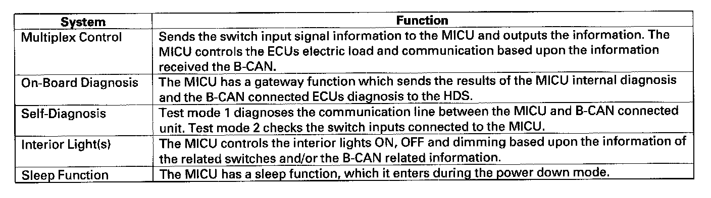
Refer to each system circuit diagram for details.
The MICU also controls the function of these circuits:
- Entry lights control (map lights and ceiling light)
- Exterior lights control (including the daytime running lights control)
- Horn
- Interlock system
- Key-in reminder
- Keyless entry
- Lights-on reminder
- Power door locks
- Seat belt reminder
- Security alarm
- Turn signal/hazard flasher
- Wiper/washer
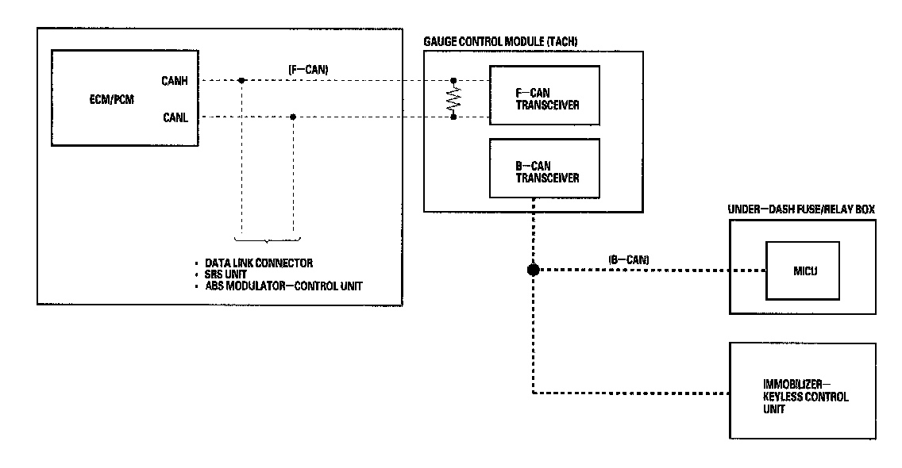
Body Controller Area Network (B-CAN) and Fast Controller Area Network (F-CAN)
The body controller area network (B-CAN) and the fast controller area network (F-CAN) share information between multiple electronic control units (ECUs). B-CAN communication moves at a slower speed (33.33 kbps) for convenience related items and for other functions. F-CAN information moves at a faster speed (500 kbps) for "real time" functions such as fuel and emissions data. To allow both systems to share information, the gauge control module translates information from B-CAN to F-CAN and from F-CAN to B-CAN.
- The single wire method is used between the units not requiring the communication to move at a fast speed.
- Using a single wire method reduces the number of the wires used on the body controller area network.
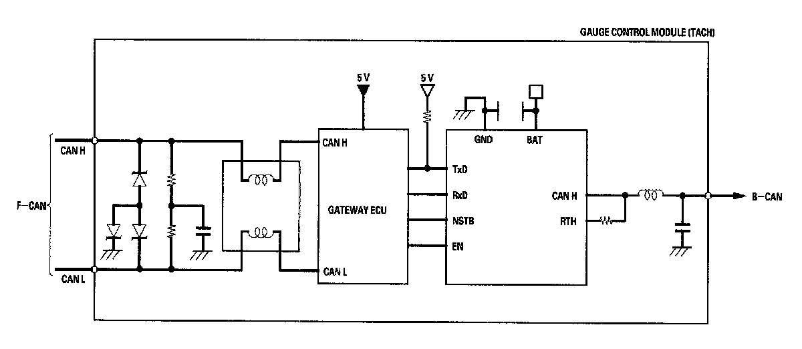
Gateway Function
The gauge control module (tach) acts as a gateway to allow both systems to share information, the gauge control module translates information from B-CAN to F-CAN and from F-CAN to B-CAN.
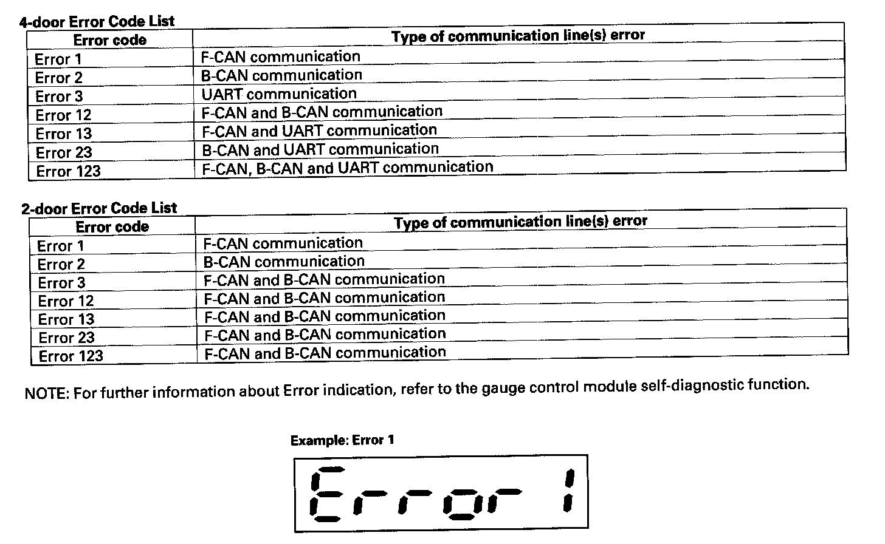
Network "Loss of Communication" Error Checking Function
The ECUs on the CAN circuit send messages to each other. If there are any malfunctions on the network, the odo/trip display on the gauge control module can indicate the error messages by entering the gauge self-diagnostic function.
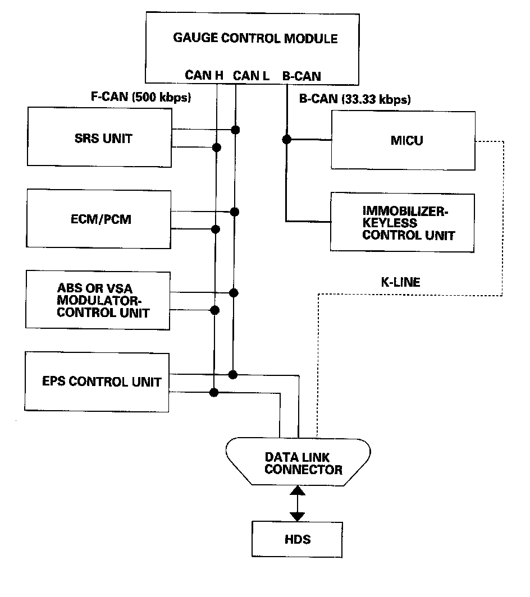
Self-diagnostic Function
By connecting the HDS to the data link connector (DLC), the HDS can retrieve the diagnostic results from the MICU via a diagnostic line called K-LINE. The K-LINE is distinguished from the CAN line, and connected to the CAN related ECUs.
The MICU is a gateway between the HDS and B-CAN related ECUs, and sends B-CAN diagnostic results to the HDS.
When performing a function test with the HDS, the HDS sends an output signal through the K-LINE to the MICU. The MICU either relays the request to another ECU, or commands the function its self.
Wake-up and Sleep Function
The multiplex integrated control system has "wake-up" and "sleep" functions to decrease parasitic draw on the battery when the ignition switch is OFF.
- In the sleep mode, the MICU stops functioning (communication and CPU control) when it is not necessary for the system to operate.
- As soon as any operation is requested (for example, a door is unlocked), the related control unit in the sleep mode immediately wakes up and begins to function.
- When the ignition switch is turned OFF, and the driver's door is opened, then closed, there is a delay about 40 seconds before the control unit goes from the wake-up mode to the sleep mode.
- The sleep mode will not function if any door is opened or if a key is in the ignition.
- The draw is reduced from 200 mA to less than 35 mA when in the sleep mode.
NOTE: Sleep and Wake-up Mode Test.
Fail-safe Function
To prevent improper operation, the MICU has a fail-safe function. In the fail-safe mode, the output signal is fixed when any part of the system malfunctions (for example, a faulty control unit or communication line).
Each control unit has a hardware fail-safe function that fixes the output signal when there is a CPU malfunction, and a software fail-safe function that ignores the signal from a malfunctioning control unit, which allows the system to operate normally.
Hardware Fail-safe Control
Fail-safe function
When a CPU problem or a abnormal power supply voltage is detected, the MICU moves to the hardware fail-safe mode, and each system output load is set to the pre-programmed fail-safe value.
Software Fail-safe Control
When any of the data from the B-CAN circuit cannot be received within a specified time, or an unusual combination of the data is recognized, the MICU moves to the software fail-safe mode. The data that cannot be received is forced to a pre-programmed value.
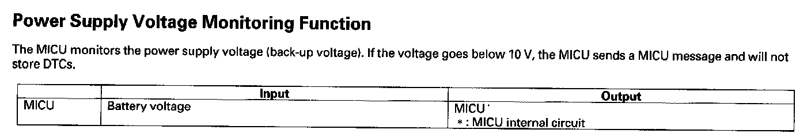
Power Supply Voltage Monitoring Function
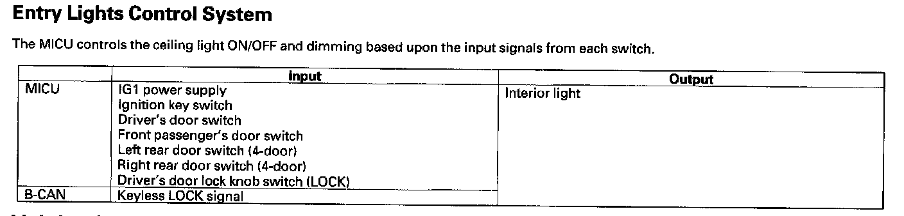
Entry Lights Control System
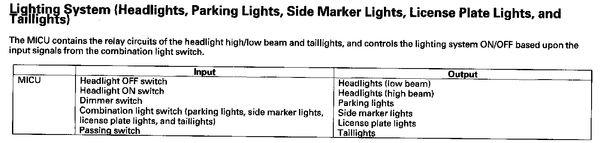
Lighting System (Headlights, Parking Lights, Side Marker Lights, License Plate Lights, and Taillights)
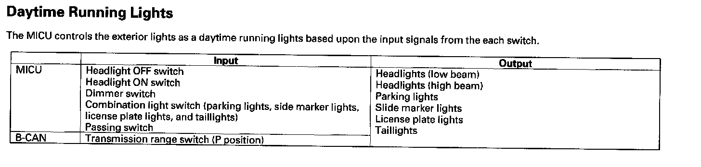
Daytime Running Lights
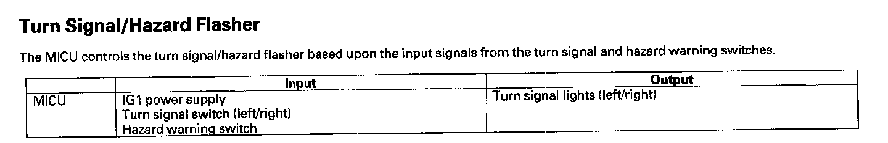
Turn Signal/Hazard Flasher
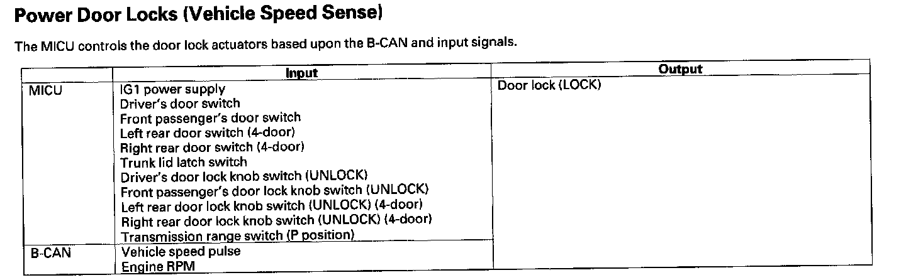
Power Door Locks (Vehicle Speed Sense)
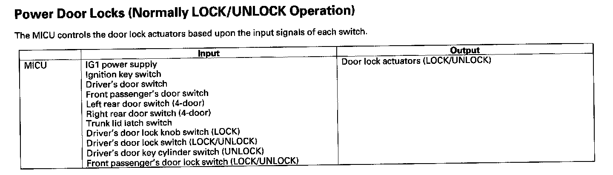
Power Door Locks (Normally LOCK/UNLOCK Operation)
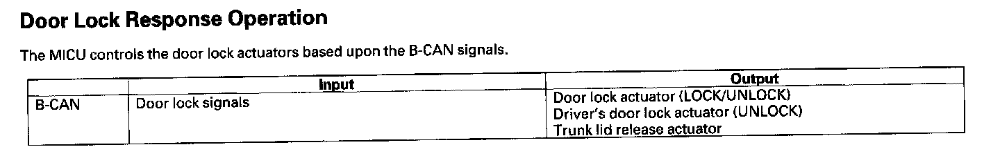
Door Lock Response Operation
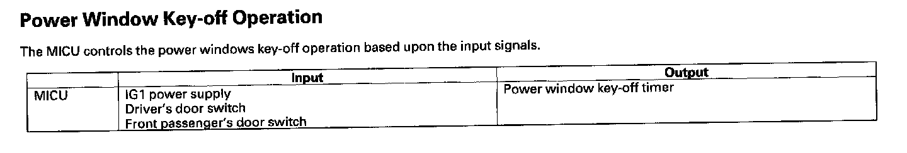
Power Window Key-off Operation
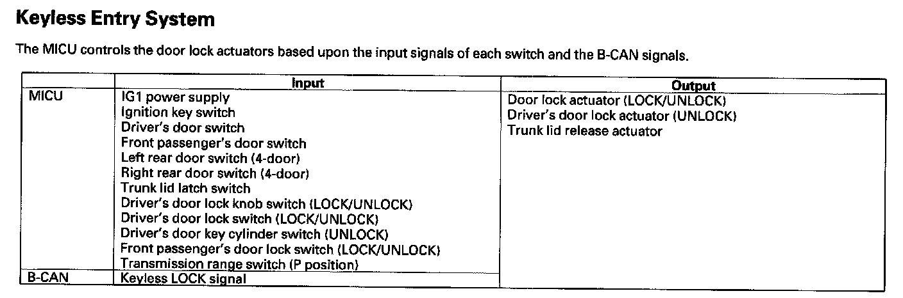
Keyless Entry System
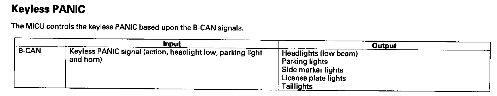
Keyless PANIC
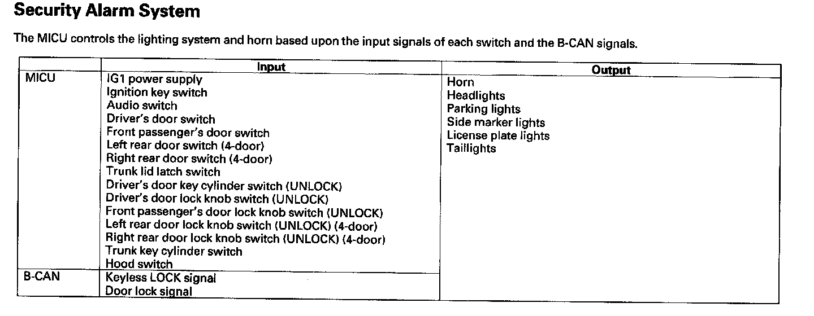
Security Alarm System
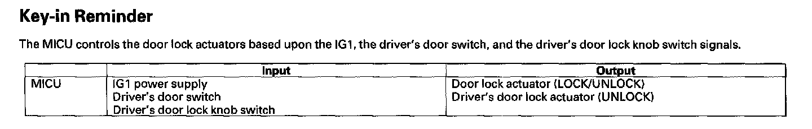
Key-in Reminder
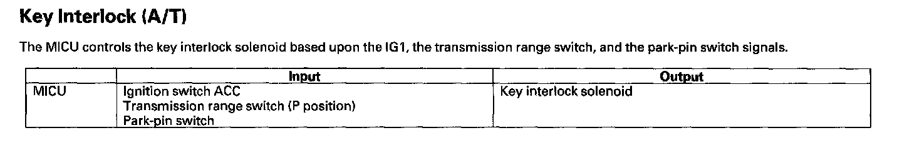
Key Interlock (A/T)
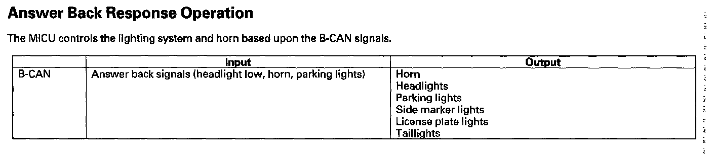
Answer Back Response Operation
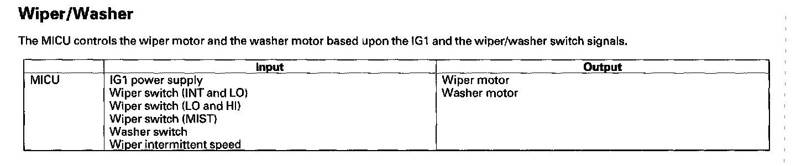
Wiper/Washer
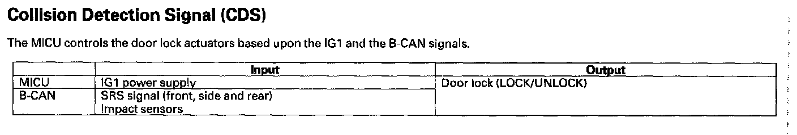
Collision Detection Signal (CDS)
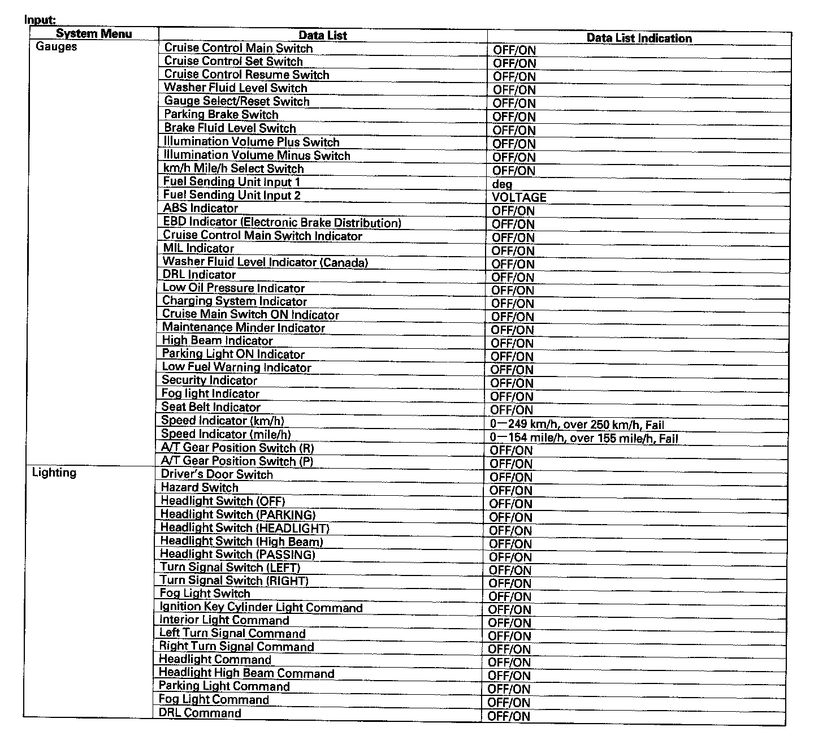
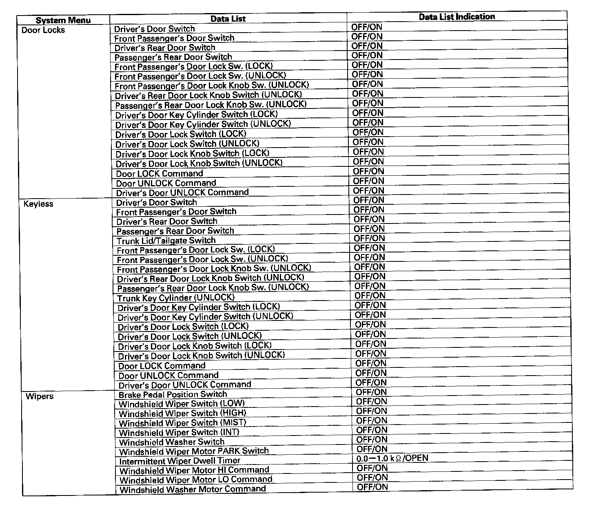
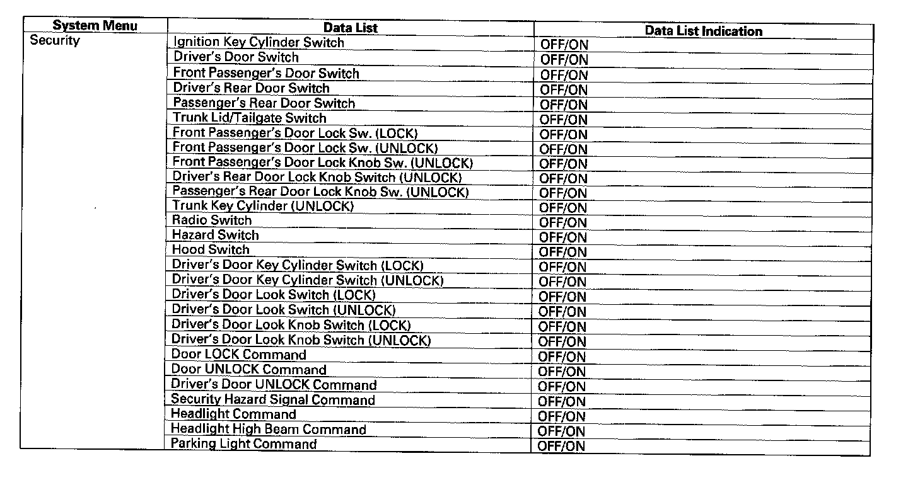
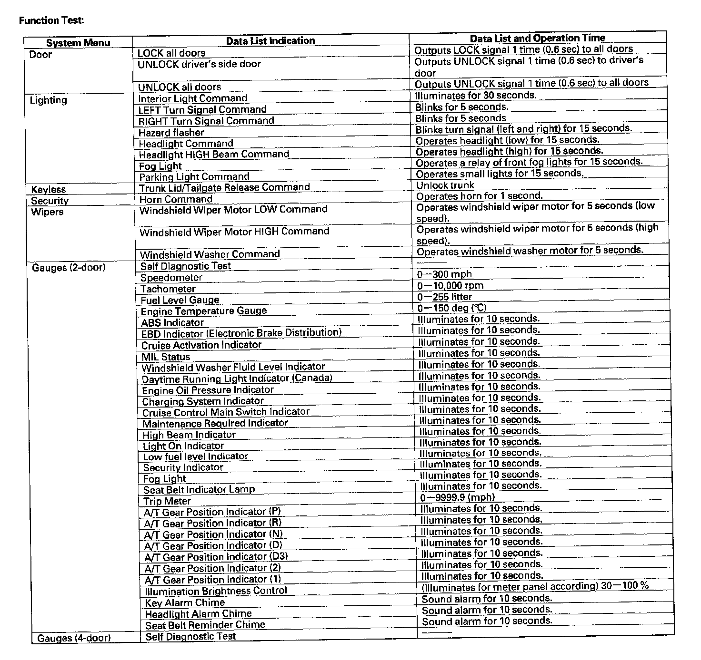
HDS Inputs and Commands
Certain inputs happen so quickly that the HDS cannot update fast enough. Hold the switch that is being tested while monitoring the Data List. This should give the HDS time to update the signal on the Data List. Because the HDS software is updated to support the release for newer vehicles it is not uncommon to see system function tests that are not supported.
Make sure that the most current software is loaded.